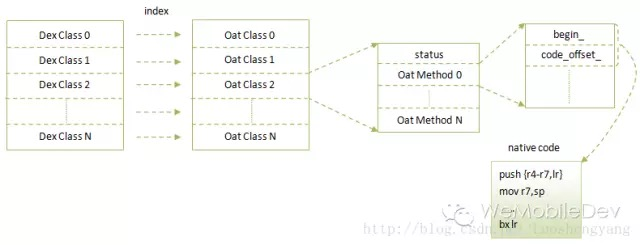
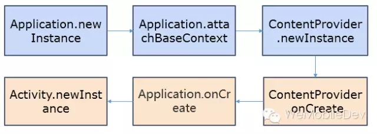
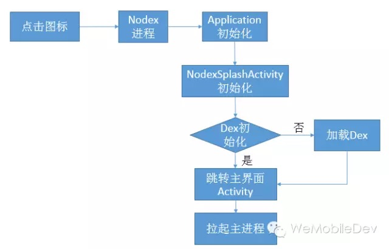
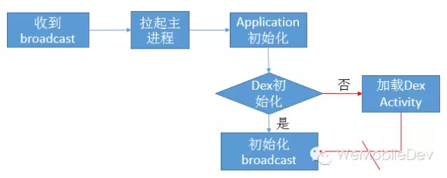
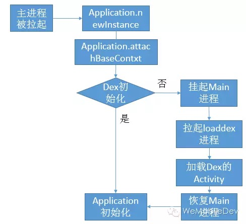
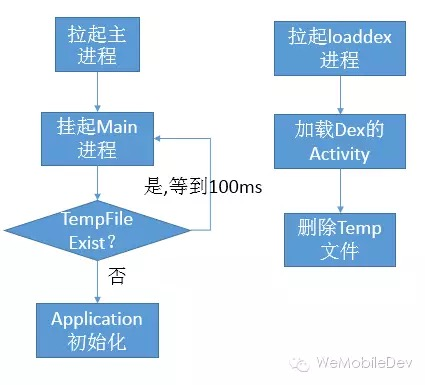

Android拆分与加载Dex的多种方案对比
来源:微信团队
对于Android大型程序来说，64k方法数与线性内存的限制都是必须要考虑的问题。对于它们的原理与分析，可参考下面这篇文章：預防 Android Dex 64k Method Size Limit。同时Android官方也推出了自己的解决方案，但却不能满足所有应用的需求。
事实上，解决64K方法限制的唯一方法是拆分多dex,不同方案的差异在于需指定哪些类必须在主dex，这与我们期待的效果以及加载方式相关。解决安装过程线性内存的方法是限制主dex的linearalloc大小，这里经验值为3355444(2.2以上，如何计算？)。对于运行过程的线性内存限制可参考Facebook。下面分别对我了解的几种分dex与加载dex的方案作简单的对比分析。
Android官方方案
Android推出了官方的multidex support library。集成与使用的方法非常简单，下面从几方面简述：
1. Dex形式
我们只需指定multiDexEnabled，即可编译自动拆分多dex,拆分出来的dex以classes(..N).dex形式命名，与主dex同样放于安装包的根目录。
defaultConfig {
...
// Enabling multidex support.
multiDexEnabled true
}
为什么要以classes(..N).dex，而不是我们常见的放于assets?这是为了5.0以上系统在安装过程中的art阶段就将所有的classes(..N).dex合并到一个单独的oat文件(5.0以下只能苦逼的启动时加载)。对于Art相关知识，可以参考老罗的系列文章。

上图即为一个oat文件的格式图。Android采取这种方式，明显也是为了擦之前的屁股。另一方面，最新报告5.0以上已经占了超过9%，这说明是非常有必要采用这种方式以减少首次启动的耗时。
2. Dex类分包的规则
我们只是指定了multiDexEnabled，那系统会将那些类放在主dex?其实它利用的是Android sdk build tool中的mainDexClasses脚本，这在版本21以上才会有。使用方法非常很简单：
mainDexClasses [--output <output file>] <application path>
该脚本要求输入一个文件组（包含编译后的目录或jar包），然后分析文件组中的类并写入到--output所指定的文件中。实现原理也不复杂，主要分为三步：
a. 环境检查，包括传入参数合法性检查，路径检查以及proguard环境检测等。
b. 使用mainDexClasses.rules规则，通过Proguard的shrink功能，裁剪无关类，生成一个tmp.jar包。
c. 通过生成的tmp jar包，调用MainDexListBuilder类生成主dex的文件列表。
这里只是简单的得到所有入口类(即rules中的Instrumentation、application、Activity、Annotation等等)的直接引入类。何为直接引用类？在init过程，会在校验阶段去resolve它各个方法、变量引用到的类，这些类统称为某个类的直接引用类。举个栗子：
public class MainActivity extends Activity {
protected void onCreate(Bundle savedInstanceState) {
DirectReferenceClass test = new DirectReferenceClass();
}
}
public class DirectReferenceClass {
public DirectReferenceClass() {
InDirectReferenceClass test = new InDirectReferenceClass();
}
}
public class InDirectReferenceClass {
public InDirectReferenceClass() {
}
}
上面有MainActivity、DirectReferenceClass、InDirectReferenceClass三个类，其中DirectReferenceClass是MainActivity的直接引用类，InDirectReferenceClass是DirectReferenceClass的直接引用类。而InDirectReferenceClass是MainActivity的间接引用类(即直接引用类的所有直接引用类)。
3. 加载Dex的方式
对于5.0以下的系统，我们需要在启动时手动加载其他的dex。而我们并没有要求得到所有的间接引用类，这是因为我们在attachBaseContext的时候，已将其他dex加载。例如：
public class HelloMultiDexApplication extends Application {
@Override
protected void attachBaseContext(Context base) {
super.attachBaseContext(base);
MultiDex.install(this);
}
}
attachBaseContext究竟处于生命周期的哪一步？可看下图:

事实上，若我们在attachBaseContext中调用Multidex.install，我们只需引入Application的直接引用类即可，mainDexClasses将Activity、ContentProvider、Service等的直接引用类也引入，主要是满足需要在非attachBaseContent加载多dex的需求。另一方面，若存在以下代码，将出现NoClassDefFoundError错误。
public class HelloMultiDexApplication extends Application {
@Override
protected void attachBaseContext(Context base) {
super.attachBaseContext(base);
DirectReferenceClass test = new DirectReferenceClass();
MultiDex.install(this);
}
}
这是因为在实际运行过程中，DirectReferenceClass需要的InDirectReferenceClass并不一定在主dex。解决方法是手动将该类放于dx的-main-dex-list参数中：
afterEvaluate {
tasks.matching {
it.name.startsWith('dex')
}.each { dx ->
if (dx.additionalParameters == null) {
dx.additionalParameters = []
}
dx.additionalParameters += '--multi-dex'
dx.additionalParameters += "--main-dex-list=$projectDir/<filename>".toString()
}
}
Android提供的方案，或者延伸为在attachBaseContext中同步加载dex的方案，它的好处是非常简单，所需的依赖集也非常少。但是它的缺点也非常明显，即若其他dex比较大，首次加载时会出现明显的黑屏，甚至会出现ANR。
微信/手Q加载方案
对于微信来说，我们一共有111052个方法。以线性内存3355444(限制5m,给系统预留部分)、方法数64K为限制，即当满足任意一个条件时，将拆分dex。由此微信将得到一个主dex,两个子dex，若微信采用Android方案，在首次启动时将长期无响应(没有出现黑屏时因为默认皮肤的原因)，这对处女座的我来说是无法接受的。应该如何去做？微信与手Q的方案是类似的，将首次加载放于地球中，并用线程去加载(但是5.0之前加载dex时还是会挂起主线程)。
1. Dex形式
暂时我们还是放于assets下，以assets/secondary-program-dex-jars/secondary-N.dex.jar命名。为什么不以classes(..N).dex？这是因为一来觉得以Android的推广速度，5.0用户增长应该是遥遥无期的，二来加载Dex的代码，传进去的是zip，在加载前我们需要验证MD5，确保所加载的Dex没有被篡改(Android官方没有验证，主要是只有root才能更改吧)。
/**
* Makes an array of dex/resource path elements, one per element of
* the given array.
*/
private static Element[] makeDexElements(ArrayList<File> files, File optimizedDirectory,
ArrayList<IOException> suppressedExceptions) {
事实上，应该传进去的是dex也是应该可以的，这块在下一个版本将采用classes(..N).dex。但是如果我们使用了线程加载，并且弹出提示界面，对用户来说并不是无法接受。
2. Dex类分包的规则
分包规则即将所有Application、ContentProvider以及所有export的Activity、Service、Receiver的间接依赖集都必须放在主dex。对于微信现在来说，这部分大约有41306个方法，每次通过扫描AndroidMifest计算耗时大约为20s不到。怎么计算？可以参考buck或者mainDexClasses的做法。
public MainDexListBuilder(String rootJar, String pathString) throws IOException {
path = new Path(pathString);
ClassReferenceListBuilder mainListBuilder=new ClassReferenceListBuilder(path);
3. 加载Dex的方式
加载逻辑这边主要判断是否已经dexopt，若已经dexopt，即放在attachBaseContext加载，反之放于地球中用线程加载。怎么判断？其实很低级，因为在微信中，若判断revision改变，即将dex以及dexopt目录清空。只需简单判断两个目录dex名称、数量是否与配置文件的一致。
(name md5 校验是否加载成功类)
secondary-1.dex.jar 63e5240eac9bdb5101fc35bd40a98679 secondary.dex01.Canary
secondary-2.dex.jar e7d2a4a181f579784a4286193feaf457 secondary.dex02.Canary
总的来说，这种方案用户体验较好，缺点在于太过复杂，每次都需重新扫描依赖集，而且使用的是比较大的间接依赖集(要真正运行到，直接依赖集是不行的)。当前微信必要的依赖集已经41306个方法，说不定哪一天就爆了。
FaceBook加载方案
那是否存在一种加载方式它的依赖集很小，但却不会像官方方案一样造成明显的卡顿？逆过不少app,发现facebook的思路还是挺不错的，下面作一个简单的说明：
1. Dex形式
微信与facebook的dex形式是完全一致的，这是因为我们也是使用facebook开源工具buck编译的。但是我们做了一个自动生成buck脚本的工作，即开发人员无须关心buck脚本如何编写。
2. Dex类分包的规则
facebook将加载Dex的逻辑放于单独的nodex进程，这是一个非常简单、轻量级的进程。它没有任何的ContentProvider，只有有限的几个Activity、Service。
<activity android:exported="false" android:process=":nodex"
android:name="com.facebook.nodex.startup.splashscreen.NodexSplashActivity">
所以依赖集为Application、NodexSplashActivity的间接依赖集即可，而且这部分逻辑应该相对稳定，我们无须做动态扫描。这就实现了一个非常轻量级的依赖集方案。
3. 加载Dex的方式
加载dex逻辑也非常简单，由于NodexSplashActivity的intent-filter指定为Main与LAUNCHER。首先拉起nodex进程，然后初始化NodexSplashActivityActivity，若此时Dex已经初始化过，即直接跳转到主页面。

这种方式好处在于依赖集非常简单，同时首次加载Dex时也不会卡死。但是它的缺点也很明显，即每次启动主进程时，都需先启动nodex进程。尽管nodex进程逻辑非常简单，这也需100ms以上。若微信对启动时间非常敏感，很难会去采用这个方案。
测试加载方案
Facebook的缺陷在于多起一个nodex进程，那是否可以直接在主进程做这个操作？想到一种方案，通过简单测试应该可行，下面做简单说明：
1. Dex形式
Dex形式并不是重点，假定我们使用当前微信的Dex形式，即assets/secondary-program-dex-jars/secondary-N.dex.jar。
2. Dex类分包的规则
主Dex应该保证简单，即类似Facebook，只需要少量与Dex加载相关的类即可，并且这部分代码是相对稳定。我也无须去更改任何非加载相关的代码，即不会像微信/手Q方案，我们需要修改BaseExportActivity、BaseExportServer、BaseExportBroadcast等代码。
3. 加载Dex的方式
回到重点，我们应该通过什么加载方案去实现这样的分包规则。首先若是点击图标，我们的确无须再起一个进程，即下面是可行的：

但是问题就在于在Application初始化时，或是在attachBaseContext时，我们无法确保即将进入的是主界面Activity。可能系统要起的是某一个Service或Receiver，这种跳转方式是不行的。例如下图中的红色部分，我们无法知道将跳转到哪里：

能不能换种思路，即假设发现Dex没有初始化，在attachBaseContext的时候挂起主进程，然后起另外一个loaddex进程去加载Dex。等loaddex进程加载完后，我们再通知主进程继续往下走。

现在转化为两个问题：
a.通过何种方式挂起主进程？
b.挂住主进程过程中，是否会产生ANR？
进程同步可以使用pthread_mutex_xxx、 pthread_cond_xxx,但是mutex或cond要放于共享内存中，过于复杂。或者由于在主进程访问远端Service，也是同步的，这应该也是一种不错的方法。但是我最后测试时采用的是一个最简单的方法，即检测到没有加载dex时,会在com.tencent.mm下新建一个临时文件，每隔100ms去询问文件是否存在。而在loaddex结束后，即主动的删除该文件。

那会不会出现ANR呢？事实上是不会的，因为主进程已经不是前台进程了，经过测试，在attachBaseContext，无论将要启动的Activity、Broadcast还是Service，尽管卡住100s，也不会出现ANR(回想ANR的几个原因，按键消息、Broadcast onReceiver或者Service)。
总的来说，这种方式好处在于依赖集非常简单，同时它的集成方式也是非常简单，我们无须去修改与加载无关的代码。但是没有经过广泛的测试，欢迎交流或指正方案中的缺陷。
总结
对dex以及art研究过一段时间，不少细节还是要注意的。列一下微信现在的ToDo List：
- 使用
classes(..N).dex形式； - 论证第四种方案是否可行，想到一个问题就是如果起得是一个
Service弹出界面，似乎有点唐突，但是这个可以通过判断当前TopActivity方式解决。 ...
以上都是个人的理解，可能有错误或纰漏的地方，欢迎大家指正与技术交流。